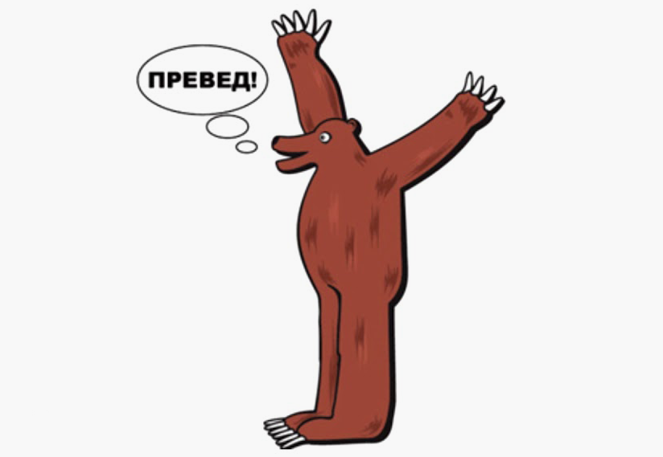
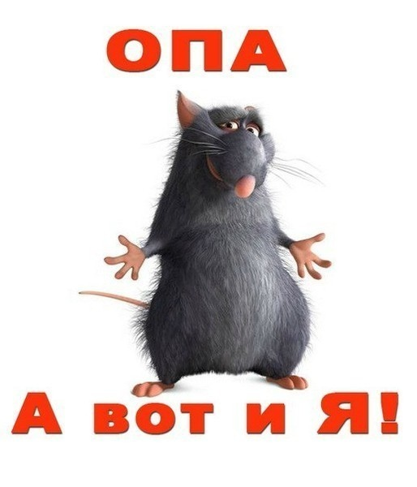
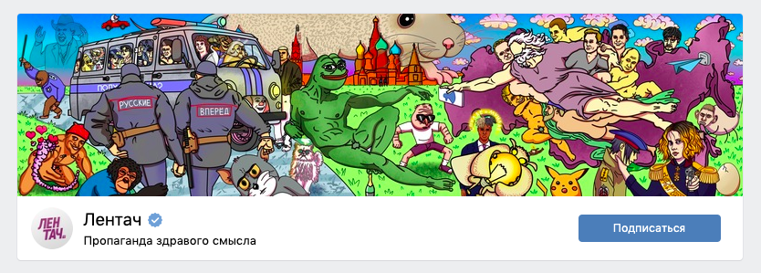
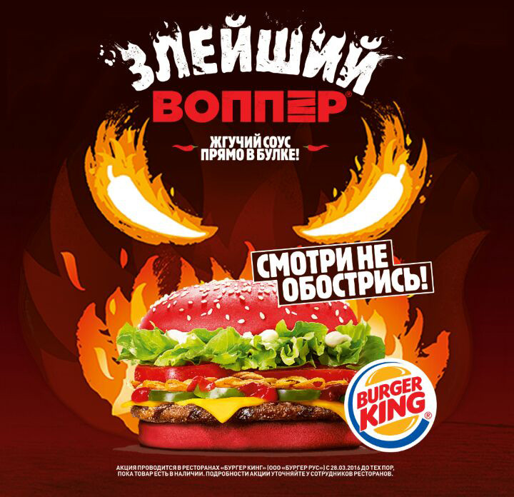

Термин мем (от греч. подобие), несмотря на кажущуюся игривость, имеет научное происхождение. В 1976 году его ввел эволюционный биолог Ричард Докинз. Он предложил считать мемом «единицу культурной информации, ведущую себя как ген», то есть способную копировать саму себя. В качестве примеров ученый привел тренды, технологии, моду, устойчивые выражения, которые распространяются среди людей подобно генам в генофонде.
С появлением интернета понятие мема вырвалось в медиапространство, потеряв большую часть своей «наукоемкости». Мемами или «мемасами» стали называть вирусный контент, как правило, ироничного содержания. Первыми образцами мемов в Рунете считаются «Превед, медвед», «Мистер трололо» Эдуарда Хиля и «олбанский» язык.
Сегодня мемы стали привычным явлением, но сохранили при этом статус одного из самых притягательных объектов массовой культуры, к которому не ослабевает научный интерес. Правда, попытки изучать современные мемы сейчас больше напоминают игры в догонялки. Если еще несколько лет назад мем оставался объектом внимания продолжительное время — так, например, в течение года кочевал в медиапространстве и за его пределами знаменитый Упоротый лис, — то сейчас отдельно взятый мем моментально (иногда в течение 24 часов) теряет свою актуальность.
Исследователи отмечают, что насыщенный контекст и скорость изменения повестки тем не менее не исказили природу «мемасов».
Даже так называемые постироничные мемы, например «Мыш кродеться», интуитивно понятны большинству и апеллируют к конкретным эмоциям.
 Агрегаторы развлекательного контента появились в Рунете раньше, чем соцсети. «Фишки», «ЯПлакалъ», «Лепра» — первые сайты, где были предприняты попытки создания коммерческих мемов. Ресурсы отличались снобистским имиджем «кузницы контента», а «Лепра», например, даже ввела закрытую регистрацию. С появлением соцсетей нишу заняли паблики, заточенные на монетизацию. Одни из самых популярных на сегодня мем-сообществ — «MDK» и «Борщ» — базируются во «ВКонтакте» и имеют аудиторию в несколько миллионов подписчиков.
«Борщ» был создан в 2007 году, когда в отсутствие конкурентов не так сложно было привлечь подписчиков с помощью хорошей начинки
— говорит администратор паблика Дмитрий Филатов.
Недавно на сообщество «Борщ» подал в суд законодатель Павел Валенчук, обидевшись на мем про самого красивого депутата, к которому можно записаться «на бровки и маникюр», — историю моментально растиражировали медиа.
История с обидчивым депутатом — еще один пример того, как ироничная картинка может «уйти в народ». В данном случае не только сам мем, но и реакция «героя» стали поводом для резонанса.
Медийную силу подобным сообществам придает явное пренебрежение к цензуре и подростковое нахальство, тем более, что основная аудитория этих пабликов — молодые люди.
Вычислить профессиональную формулу создания «вирусного» мема пока никому не удалось. Но есть факторы, которые повышают шансы коммерческого мема стать популярным. Например, картинки на тему обсуждаемой всеми актуальной повестки вроде Евровидения или ЧМ по футболу наверняка соберут большую аудиторию, чем рядовые сюжеты. Часто срабатывает и массовая рассылка («форс»), когда картинку начинают распространять в пабликах, сообщениях и комментариях. Пример одного из знаменитых форсет-мемов — мышонок из Рататуя.
 Среди пабликов, зарабатывающих на мемах, есть не только самостоятельные площадки, но и приложения к полноценным медиа. Освоить дополнительный формат подачи новостей в соцсетях (через мемы) пытаются многие СМИ, но удачных попыток немного. В качестве примера можно привести «Образовач», приложение к научному изданию «N+1». А также «Лентач» — паблик, который создавался как приложение к изданию Lenta.ru, но позже стал самостоятельным ресурсом.
По словам главного редактора «Лентача» Тараса Сычева, стратегия СМИ в соцсетях и возможность подавать контент через мемы зависит от формата издания. Но даже если новостной мем-паблик относится к медиа, создает его всегда отдельная команда.
 В маркетинге и рекламе сосредоточен главный коммерческий потенциал мемов. Сегодня они становятся полноправными участниками маркетинговой стратегии бренда, а иногда и основным средством коммуникации с аудиторией. С помощью мемов компании продвигаются в соцсетях и не только.
По словам директора агентства BrandLab Александра Еременко, привязать популярный интернет-образ к конкретному бренду невозможно. В рекламе срабатывает тот же вирусный механизм, что и при распространении мемов в Сети.
Суть работы эсэмэмщика — отслеживать тренды, быстро реагировать и публиковать пост или рекламу, пока это актуально. Если компания через десять инстанций согласовывает какую-то шутку про актуальный мем и выдает ее запоздало, это обычно выглядит нелепо
, — считает лингвист и исследователь мемов Александра Русакович.
Шутливый контент и новостная повестка сегодня так или иначе становятся частью маркетинговой стратегии любого бренда. Но примеров, когда компания в полную силу общается с клиентом на языке мемов, не боится провокационных сюжетов и шуток на грани фола, совсем немного. Зачастую юмор такого типа просто не вписывается в легенду бренда и противоречит его статусу. К тому же требует от smm-маркетологов определенного чутья: привязать мем к продукту — непростая задача.
Среди «отвязных» брендов, создающих мемы для молодой аудитории, лидирует «Бургер Кинг»: «Да, мы окурели в край», «Смотри, не обострись» — еще не самые провокационные слоганы компании. Несмотря на многочисленные суды, стратегия себя оправдывает, успешно привлекая целевую аудиторию.
То, какими станут мемы в будущем, полностью зависит от контекста, который почти невозможно предугадать.
Если представить, что в 2004 году нам показали бы мемы 2019-го года, вряд ли бы кто-то их понял и тем более над ними бы смеялся, — рассуждает Тарас Сычев. — Весь этот контент подстраивается под ситуации и вместе с ними эволюционирует
.
Вероятно, можно пофантазировать на тему технологий будущего и новых способов распространения мемов, но это будет исключительно шутливая футурология. Исследователи считают, что «мемасы» как единица культурной информации, помноженная на технологии, будут существовать всегда. Главное, чтобы нам было смешно, а не страшно.